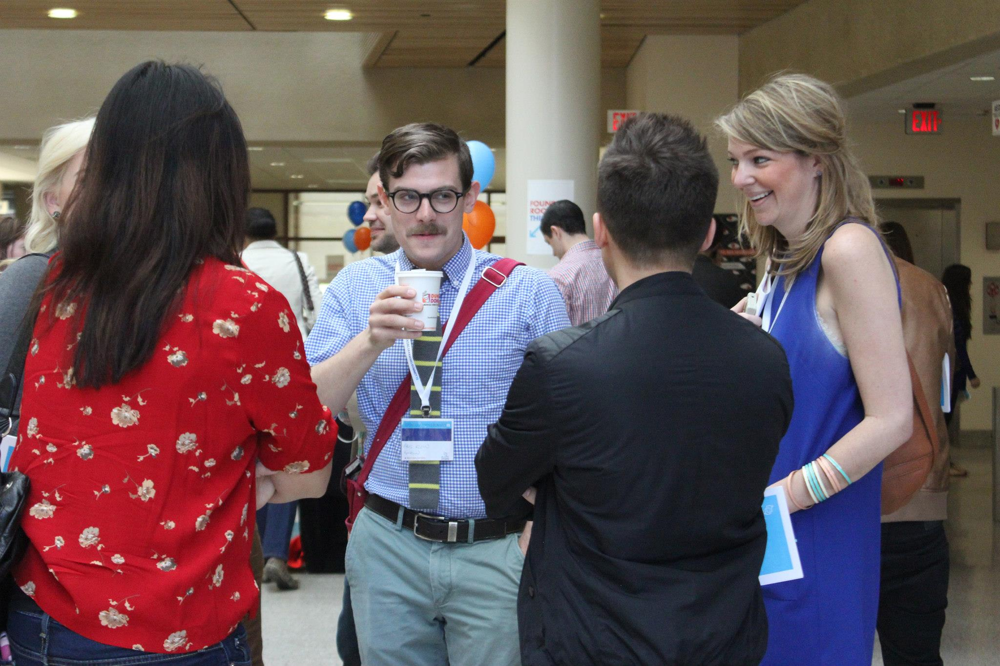
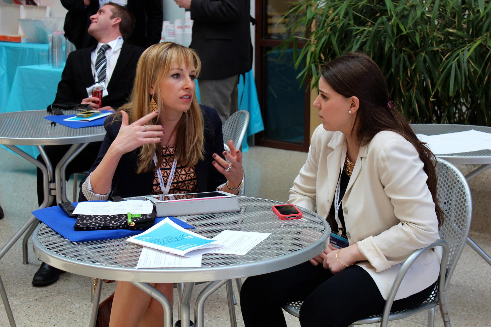
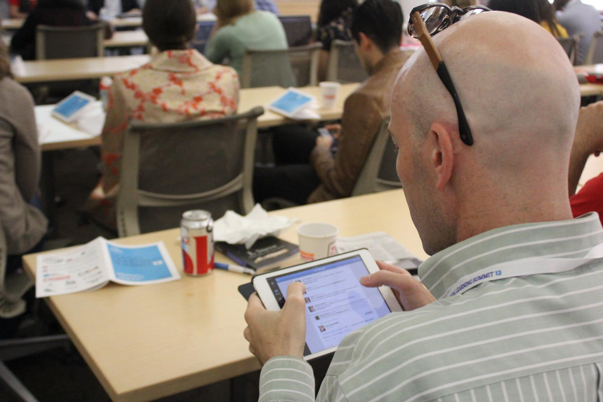
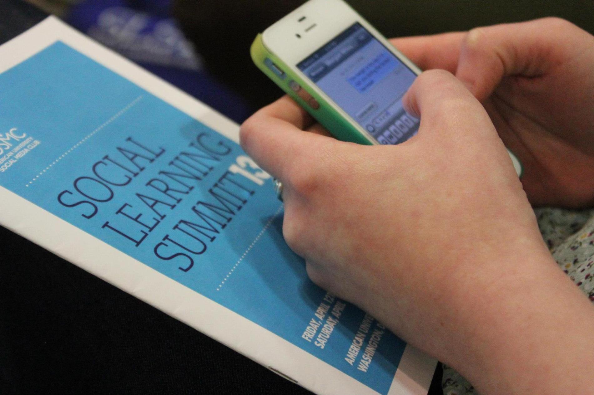

Designing beyond the hashtag
Social Learning Summit 2013
Date
April 2013
Project Details
UI/UX + Front End Dev + Print
Role
Designer + Front-End Developer
Third times a charm
Now in it's fifth year the Social Learning Summit is a District-wide social media conference that brings together students and professionals in the digital space. When I joined the Social Media Club team as vice president in 2013 it was the largest student-run social media conference in the city with an average of 300+ attendees a year.
At the time, the conference had already gained a large fan-base but I saw opportunity for improvement and worked to bring in high-level speakers from Twitter, Tumblr and IBM to provide fresher content for new and returning attendees. I also worked closely with the design and business teams to craft a new marketing campaign and design/build a dedicated website for the two-day event.
- 
- 
[1] Marketing Campaign
With 14 panels, 3 keynote speakers and over 50 panelists, there is a lot of content to keep track of and attendees often complained about not being able to understand the difference between the panel topics. In response, I decided to design 16 vector icons that established subtle yet unique identities for each fo the indiviual panel topics. The icons are color cordinated according to the time block in which they are scheduled and were used throughout the print and online marketing leading up to the event.
[2] Conference Website
In previous years the conference speakers and event information was simply thrown into an extra menu page on the AU Social Media Club’s main website. As a result the team was constantly flooded with emails and tweets from attendees with questions about the schedule so I spent a spare weekend locked in my room designing and building the responsive website. We received a lot of positive feedback on the accesibilty of the site but since I hand-coded it without a CMS the maintence of the site before the event was honestly a nightmare. Built with the Foundations Framework Live site currently undergoing maintenance
- 
- 